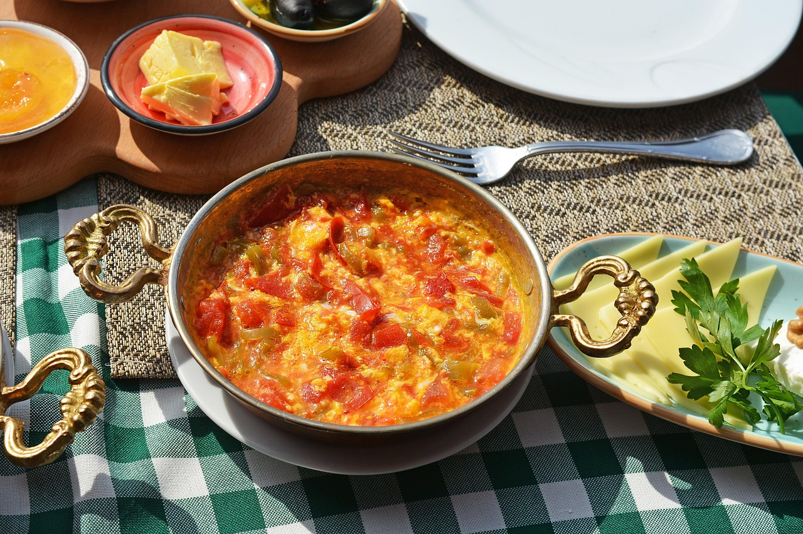

Homepage
Menemen

Description
Menemen is a traditional Turkish dish made with eggs, tomatoes, green peppers, and spices.
It is typically served for breakfast and is known for its rich and flavorful taste.
Ingredients
- 4 eggs
- 2 large tomatoes, diced
- 2 green peppers, sliced
- 1 onion, finely chopped
- 2 tablespoons olive oil
- Salt and pepper to taste
Instructions
- Heat olive oil in a pan over medium heat.
- Add the chopped onion and green peppers, sauté until softened.
- Add the diced tomatoes and cook until they break down and form a sauce.
- Crack the eggs into the pan and stir gently to combine with the tomato mixture.
- Cook until the eggs are set but still soft.
- Season with salt and pepper to taste.
- Serve hot with crusty bread.